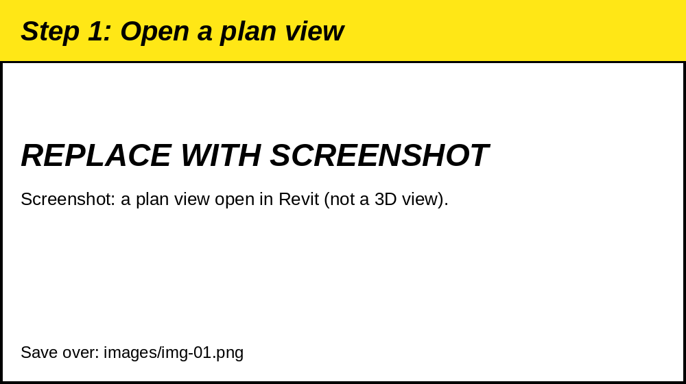
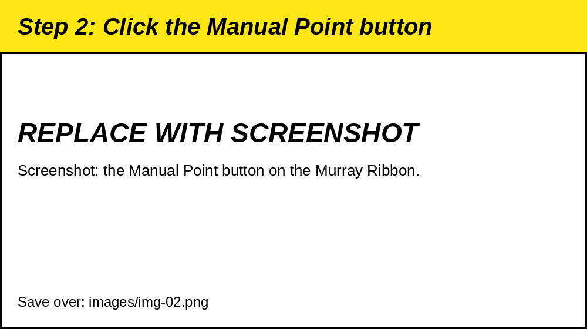
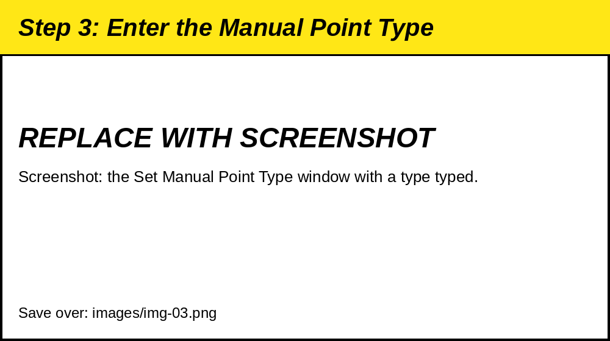
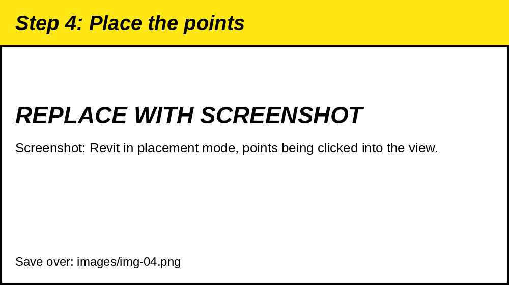

Why and when do we place manual points?
Why - Places Manual Point families in the model, each one labeled with a type name you choose (for example WASTE), so the points can be seen, scheduled, and told apart by type. [CONFIRM: purpose and typical use]
When - As requested, when points need to be marked by hand at chosen locations in a plan view.
The tool does not work in a 3D view. If you try it there, a message says "Cannot use in 3D view." Open a plan view first.
1. Open a plan view:
- Open the plan view where you want to place the points.
- Do not use a 3D view.

2. Click the Manual Point button:
- Click the Manual Point button on the Murray Ribbon. [CONFIRM: ribbon tab and panel]
- A Set Manual Point Type window opens.

3. Enter the Manual Point Type:
-
Type the type name in the Enter Manual Point Type box.
- Letters change to capitals as you type.
- The box starts with the last type you used. The first time, it shows WASTE.
- The box cannot be empty.
-
If the type does not exist yet, the tool creates it for you. The type name is also written to the point's
TS_Point_Description. - Click Place.
- Click Close to leave without placing anything.

4. Place the points:
- If the Manual Point family is not in the project, the tool loads it for you.
- Revit goes into placement mode. Click in the view to place each point.
- Press Esc, or right-click and choose Cancel, when you are done placing.
- Every point placed in this run is the type you entered.

Revit 2022 only: the first time the family is loaded, a message says to run the command again. Click the button again and repeat steps 3 and 4.
5. Check the result:
- The points are in the view. Select one and check the type in Properties.
- The tool does not show a confirmation message.
- To place points of a different type, click the button again and enter the new type.
ONE THING TO NOTE: THE LAST TYPE YOU USED IS SAVED, SO THE NEXT RUN STARTS WITH THE SAME TYPE.
CHECK THE TYPE NAME IN THE BOX BEFORE YOU CLICK PLACE EVERY TIME.
What the tool does for you:
- Loads the family. The Manual Point family is loaded if it is missing.
- Creates the type. A new type is made from the existing one when you enter a new name.
-
Writes the description.
TS_Point_Descriptionis set to the type name. - Remembers your entry. The last type is filled in the next time.
If something goes wrong:
- "Cannot use in 3D view." Open a plan view and run the tool again.
- "Please enter a valid Manual Point type." The box is empty. Type a type name.
- "Family file not found." The Manual Point family file is missing from the tool folder. Tell the tool owner. [CONFIRM: tool owner]
- "No symbols found in family 'Manual Point'." The family in the project has no types. Tell the tool owner.
-
"Parameter 'TS_Point_Description' not found," "is read-only," or "is not a text parameter." The new type could not be created. Check that
TS_Point_Descriptionexists on the Manual Point family as an editable text parameter. - "Family loaded successfully. Run the command again to place the family." Revit 2022 only. Run the tool again.
- A "Placement error" message. Revit could not start placement. Run the tool again, and tell the tool owner if it repeats.
CHECK THE POINT LOCATIONS AND TYPES AGAINST THE MODEL OR LAYOUT DATA BEFORE THEY ARE USED IN THE FIELD OR SENT TO ANOTHER TRADE.
[CONFIRM: Egnyte link for the training video or the family file, if one exists]
<!-- OPEN ITEMS (remove before posting to the Help Hub)
- [CONFIRM: tool title, tooltip, and author from bundle.yaml. Not provided.]
- [CONFIRM: exact Murray Ribbon tab and panel and the button name.]
- [CONFIRM: purpose and typical use for the Why line, and what WASTE and other types mean.]
- [CONFIRM: tool owner name for the support lines.]
- [CONFIRM: add the buttons: line in this help.md, using the same format as the other topics. Format not provided.]
- Topic folder and topic.txt name not provided. Other topics use names like MCPointloadDuct or ChangeRodSize.
-
Placeholder images are in images/. Replace each with a real screenshot using the same file name:
img-01.png a plan view open in Revit img-02.png the Manual Point button on the Murray Ribbon img-03.png the Set Manual Point Type window with a type typed img-04.png Revit in placement mode, points being placed img-05.png placed points in the view and the type in Properties
-->